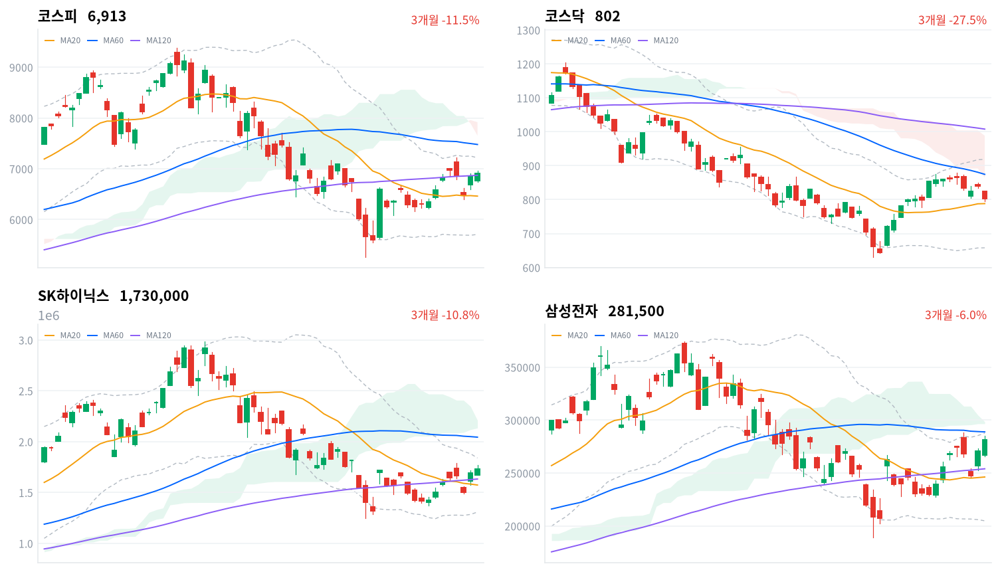
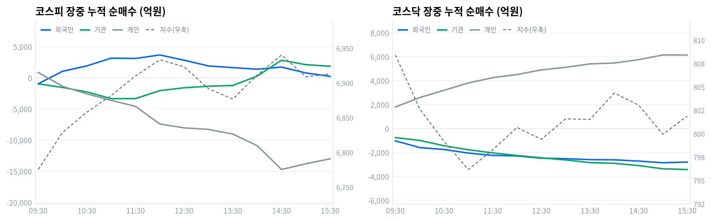

삼성전자·SK하이닉스 주주환원 기대감이 코스피를 개장 초반 -1.6%대 낙폭에서 끌어올린 반면, 코스닥은 전일 급등했던 바이오·반도체 소부장의 차익매물이 겹치며 오전 10시 5분 코스닥150 선물 기준 -6%대까지 밀려 매도 사이드카가 발동됐다.
오늘 코스피 반등의 동인은 거시 재료가 아니라 반도체 대형주 두 곳의 주주환원 이벤트다. SK하이닉스가 40조원 규모 자사주 매입·소각 계획을 재확인했고, 삼성전자는 이날 오후 4시 90조~110조원 규모(특별배당 포함 100조원 이상 관측)의 신규 주주환원 패키지를 발표할 예정이었다는 소식이 장중 내내 지수를 견인했다.
코스피는 시가(6,759.95, 전일比 -1.35%)에서 당일 저가 6,742.44(-1.61%)까지 밀렸다가 개장 40분 만에 반등해 12:00 6,933.53까지 올랐고, 14:30 30분봉 기준 고점 6,940.32(당일 고가는 6,954.12)를 거쳐 6,912.95(+0.88%)로 마감했다.
정합성·괴리가격과 수급의 정합성은 코스피에서 뚜렷하지 않다. 확정 수급은 개인 -1조1,652억원, 외국인 -1,760억원, 기관 +2,481억원(모두 당일 잠정)으로 세 주체 모두 강한 매수 축이 아니었는데도 지수는 올랐고, 프로그램 매매의 비차익(방향성 바스켓)도 -8,378억원 순매도(당일 잠정)로 지수 상승과 반대 방향이었다.
장중 궤적을 보면 외국인은 09:45 순매도에서 순매수로 전환해 11:52 누적 +3,750억원까지 늘며 코스피의 오전 상승 구간과 같은 방향으로 움직였지만 오후 들어 그 매수분을 되돌려 15:30 세션 마지막 관측치는 +244억원에 그쳤고, 확정치에서는 아예 -1,760억원으로 순매도 전환됐다 — 스냅샷과 확정치가 부호까지 뒤집힌 사례다. 이는 오늘 상승이 폭넓은 수급이 아니라 삼성전자·SK하이닉스 두 종목의 개별 매수(거래대금 합산 15.06조원, 반도체 테마 ETF 8종 합산 1.64조원의 아홉 배)에 좁게 의존한 쏠림 장세였음을 시사한다.
코스닥에서도 괴리가 뚜렷한데, 개인이 +6,236억원(당일 잠정)을 순매수하며 장중 내내 한 방향으로 매수를 늘렸음에도 지수는 외국인(-2,837억원)·기관(-3,462억원)의 동반 매도에 눌려 -4.63%로 마감했다 — 저가 매수에 나선 개인과 사이드카를 촉발한 기관·외국인 매도가 정면으로 부딪힌 하루였다.
다음 촉매·확인 트리거기술적으로 코스피 종가(6,912.95)는 20일선(6,460.71)을 7.0% 웃돌아 볼린저 상단(7,215.16)에 근접했지만 일목균형표 구름 하단(7,652.64)에는 여전히 못 미쳐 이 구간 돌파 여부가 다음 확인 지표다. 삼성전자의 실제 발표 내용(8/21 16시 예정)이 소문(90조~110조원)에 부합하는지, SK하이닉스 자사주 소각의 구체 이행 일정이 다음 거래일(8/24, 월) 개장 전 확인 대상이다.
코스닥은 전환선(837.43)·60일선(874.43) 회복 여부가 반등 지속성의 분수령이며, 8월 27일 한국은행 금융통화위원회의 기준금리 결정(시장 일각에서는 2.75%→3.00% 추가 인상 가능성 제기)도 반도체 밸류에이션에 영향을 줄 수 있어 지켜봐야 한다.
| 지수 | 종가 | 등락률 | 시가 | 고가 | 저가 | 전일 종가 |
|---|---|---|---|---|---|---|
| 코스피 | 6,912.95 | +0.88% | 6,759.95 | 6,954.12 | 6,742.44 | 6,852.58 |
| 코스닥 | 801.94 | -4.63% | 824.05 | 824.05 | 795.57 | 840.89 |
코스피는 전일 종가(6,852.58) 대비 -1.35% 낮은 6,759.95에 출발한 뒤 개장 직후 6,742.44(-1.61%)까지 밀리며 당일 저가를 찍었다. 이후 삼성전자·SK하이닉스 주주환원 기대감에 반등해 09:30 6,775.36, 10:00 6,828.66, 11:00 6,881.99로 오전 내내 우상향했고 12:00 6,933.53까지 올랐다.
오후 초반 13:30 6,876.85까지 한 차례 되돌림을 거친 뒤 다시 반등해 14:30 6,940.32(30분봉 기준 고점)를 지나 당일 고가 6,954.12까지 올랐고, 이후 상승분을 일부 반납하며 15:00 6,908.99를 거쳐 6,912.95로 마감했다(+0.88%).
코스닥은 시가(824.05)가 그대로 당일 고가가 될 만큼 개장 직후부터 매도 압력이 강했다. 09:30 808.42, 10:00 802.66, 10:30 799.18로 개장 한 시간 반 만에 800선이 무너졌고, 오전 10시 5분경 코스닥150 선물 기준 낙폭이 -6.06%까지 커지며 매도 사이드카가 발동됐다(당일 저가 795.57, 30분봉 기준 최저치는 11:00 796.17). 이후 낙폭을 일부 되돌려 11:30 798.27, 12:00 800.67로 800선을 회복했고 오후엔 799~804 구간에서 등락하다 801.94로 마감했다(-4.63%).
전일(8/20) 모더나(MRNA) 암 백신 데이터發 급등에 편승했던 국내 바이오주가 모더나 주가 자체의 -23.5% 급반락에 동반 되돌림했고, 최근 반등폭이 컸던 반도체 소부장(소재·부품·장비)주의 차익실현 매물이 겹치며 코스닥 낙폭을 키운 것으로 보도된다(Seoul Economic Daily, 24/7 Wall St.).

코스피·코스닥·SK하이닉스·삼성전자 3개월 일봉에 이동평균(20·60·120)·볼린저밴드·일목균형표 구름대를 오버레이했다. 상승 캔들은 녹색, 하락 캔들은 적색으로 표시된다.
코스피는 20일선(6,460.71)을 7.0% 웃돌지만 60일선(7,477.31)에는 7.55% 못 미치는 혼조 배열이고, 120일선(6,869.62)은 0.63% 웃돌아 거의 붙어 있다. 볼린저밴드 %b는 0.80으로 상단(7,215.16)에 근접했고, 일목균형표 구름은 위(하단 7,652.64·상단 7,917.22)에 있어 가격이 구름 아래에 머문 상태다. 20일 스윙 고점(7,216.62)과 볼린저 상단(7,215.16)을 넘어서면 60일선(7,477.31)을 거쳐 구름 하단(7,652.64)까지 여지가 열리는 반면, 120일선(6,869.62)을 이탈하면 20일선(6,460.71) 부근까지 밀릴 수 있고 최후 지지선은 볼린저 하단(5,706.25)·20일 저점(5,262.77)이다.
코스닥은 종가(801.94)가 20일선(788.15)은 1.75% 웃돌지만 60일선(874.43)에는 8.29%, 120일선(1,007.78)에는 20.43% 못 미쳐 역배열 구조가 여전하다. 일목 전환선(837.43)에는 못 미치고 구름(하단 864.59·상단 988.26)과도 거리가 있으며 볼린저 %b는 0.553이다. 전환선(837.43)과 60일선(874.43)을 함께 넘어서면 구름 하단(864.59)-볼린저 상단(918.41) 구간까지 열리고, 20일선(788.15)을 이탈하면 기준선(755.14) 부근까지 되돌림 위험이 있으며 최후 지지선은 볼린저 하단(657.89)·20일 저점(630.99)이다.
SK하이닉스는 자사주 소각 재료로 20일선(1,573,250원)을 9.96%, 120일선(1,632,391.67원)을 5.98% 웃돌지만 60일선(2,043,966.67원)에는 15.36% 못 미치는 혼조 배열이다. 종가(1,730,000원)는 일목 기준선(1,708,500원)을 넘어섰지만 구름(하단 2,134,000원·상단 2,210,000원)까지는 아직 멀다. 볼린저 %b는 0.795로 상단(1,839,041.55원)에 근접해, 이를 넘어서면 20일 스윙 고점(1,894,000원)을 거쳐 60일선(2,043,966.67원)·구름 하단(2,134,000원)까지 여지가 열리고, 120일선(1,632,391.67원)을 이탈하면 20일선(1,573,250원) 부근이 지지선이 되며 최후 지지선은 볼린저 하단(1,307,458.45원)·20일 저점(1,246,000원)이다.
삼성전자는 20일선(246,225원)을 14.33%, 120일선(253,974.58원)을 10.84% 웃돌아 네 종목 중 가장 강한 위치에 있지만 60일선(288,858.33원)에는 아직 2.55% 못 미친다. 볼린저 %b는 0.926으로 상단(287,632.09원)에 바짝 붙었고 종가(281,500원)는 이미 20일 스윙 고점(288,000원)에 근접했다. 상단과 60일선(288,858.33원)·스윙 고점(288,000원)을 함께 넘어서면 구름 하단(296,500원)까지 열리고, 전환선(257,750원)을 이탈하면 120일선(253,974.58원)·20일선(246,225원) 부근이 지지선이 되며 최후 지지선은 볼린저 하단(204,817.91원)·20일 저점(189,200원)이다.
위 레벨은 20·60·120일 이동평균, 볼린저밴드, 일목균형표, 스윙 고저를 기계적으로 계산한 값이며 투자 권유가 아니다.
| 주체 | 순매수(억원) |
|---|---|
| 개인 | -11,652 |
| 외국인 | -1,760 |
| 기관 | +2,481 |
| 주체 | 순매수(억원) |
|---|---|
| 개인 | +6,236 |
| 외국인 | -2,837 |
| 기관 | -3,462 |
코스피는 세 주체 모두 뚜렷한 매수 축이 아니었는데도 지수가 올랐다는 점에서 수급과 가격이 느슨하게만 맞물린 하루였다. 개인이 1조1,652억원(당일 잠정) 순매도했고 외국인도 1,760억원(당일 잠정) 순매도로 돌아선 가운데 기관만 2,481억원(당일 잠정)으로 소폭 순매수했는데, 이는 전일(8/20) 외국인이 1조7,068억원 순매수하며 지수를 견인했던 것과는 다른 구도다. 오늘 상승은 아래 §6에서 보듯 삼성전자·SK하이닉스 두 종목 개별 매수에 좁게 의존했을 가능성이 크다.
코스닥은 개인이 6,236억원(당일 잠정) 순매수하며 저가 매수에 나선 반면 외국인(-2,837억원)·기관(-3,462억원)이 동반 순매도하며 지수를 눌렀다. 사이드카까지 발동된 급락장에서 개인이 매수 우위를 보인 것은 전형적인 역발상 저가 매수 패턴으로, 외국인·기관의 매도가 프로그램·차익실현 성격이었다는 정황과 맞물린다.

누적 순매수(억원), 정규장 09:30~15:30 30분 앵커 기준. 지수는 우측 축.
| 시각 | 코스피(억원) | 코스닥(억원) | ||||
|---|---|---|---|---|---|---|
| 개인 | 외국인 | 기관 | 개인 | 외국인 | 기관 | |
| 09:30 | 866 | -940 | -959 | 1,802 | -1,023 | -752 |
| 10:00 | -1,350 | 1,063 | -1,533 | 2,590 | -1,583 | -985 |
| 10:30 | -2,569 | 1,927 | -2,260 | 3,199 | -1,744 | -1,431 |
| 11:00 | -3,615 | 3,170 | -3,331 | 3,812 | -2,043 | -1,765 |
| 11:30 | -4,576 | 3,118 | -3,319 | 4,253 | -2,235 | -2,028 |
| 12:00 | -7,412 | 3,679 | -2,040 | 4,517 | -2,284 | -2,244 |
| 12:30 | -8,025 | 2,836 | -1,585 | 4,901 | -2,471 | -2,440 |
| 13:00 | -8,275 | 1,916 | -1,338 | 5,115 | -2,508 | -2,617 |
| 13:30 | -9,024 | 1,649 | -1,217 | 5,403 | -2,591 | -2,837 |
| 14:00 | -10,882 | 1,395 | 286 | 5,478 | -2,606 | -2,900 |
| 14:30 | -14,708 | 1,737 | 2,835 | 5,758 | -2,712 | -3,087 |
| 15:00 | -13,789 | 796 | 2,126 | 6,150 | -2,851 | -3,356 |
| 15:30 | -12,991 | 244 | 1,868 | 6,142 | -2,794 | -3,416 |
코스피 외국인 누적선은 09:45 순매도에서 순매수로 전환한 뒤 11:52 +3,750억원(장중 최고치)까지 단조롭게 불어났고, 이는 §3에서 본 코스피의 오전 우상향 궤적(09:30 6,775.36→12:00 6,933.53)과 같은 방향으로 움직였다. 이후 오후 들어 매수분을 되돌려 15:30 세션 마지막 관측치는 +244억원으로 줄었는데, 이는 12:00 이후 지수가 13:30 6,876.85까지 조정받은 구간과 시점이 겹친다.
개인은 09:39 순매수에서 순매도로 전환한 뒤 되돌림 없이 매도를 늘려 14:40 -1조5,035억원(장중 최저치)까지 누적됐다가 장 막판 소폭 되돌려 15:30 -1조2,991억원으로 마감했다.
기관은 13:55 순매도에서 순매수로 전환해 14:21 +3,171억원(장중 최고치)까지 늘었는데, 이 구간은 §3의 오후 반등(14:00 6,911.33→14:30 6,940.32, 30분봉 기준 고점)과 시점이 겹쳐 기관 매수가 그 반등의 한 축이었음을 보여준다. 기관 내부를 금융투자와 연기금등으로 나눠보면, 금융투자(프로그램·선물 연계 성격)는 정오(12:00) -5,205억원까지 누적 매도했다가 오후 들어 되돌리며 15:00 +172억원으로 플러스 전환해 15:30 +377억원으로 마쳤다.
연기금등(정책성 장기자금)은 정오 전후 매수를 크게 늘려 12:00 +1,987억원, 14:30 +2,372억원(장중 최고치)까지 쌓았으나 마감 직전 대거 차익실현해 15:30 +495억원으로 줄었다 — 오후 반등의 초입은 연기금 매수가, 반등 후반부의 되돌림 방어는 금융투자의 숏커버성 매수가 각각 떠받친 모양새다.
코스닥은 개인·외국인·기관 모두 장중 전환(turns) 없이 한 방향으로만 흘렀다. 개인은 09:01 +298억원에서 15:06 +6,165억원까지 순매수를 꾸준히 늘렸고, 외국인은 09:01 -109억원에서 14:54 -2,857억원까지, 기관은 09:01 -181억원에서 15:21 -3,416억원까지 순매도를 각각 단조롭게 확대했다 — 09:01 기록은 그날 단조 구간의 시작점일 뿐이라 '고점·저점'이라 부르지 않는다. 이는 사이드카가 발동된 급락장에서 프로그램·기관 자금이 하루 종일 매도 우위를 유지했고, 개인만 저가 매수를 이어갔다는 뜻이다.
정규장 마지막 관측(15:30) 대비 확정치 전환 과정에서 코스피 외국인은 부호까지 뒤집혔다. 개인은 -1조2,991억원에서 확정 -1조1,652억원으로 매도 강도가 다소 줄었지만, 외국인은 +244억원에서 확정 -1,760억원으로 순매수가 순매도로 반전됐고, 기관은 +1,868억원에서 확정 +2,481억원으로 매수 강도가 커졌다.
코스닥은 개인이 +6,142억원에서 +6,236억원으로, 외국인이 -2,794억원에서 -2,837억원으로, 기관이 -3,416억원에서 -3,462억원으로 방향은 유지한 채 강도만 소폭 커졌다. 다음 거래일 개장 전에는 코스피 외국인의 방향 반전이 반복되는 패턴인지 확인이 필요하다.
| 시장 | 차익 순매수(억원) | 비차익 순매수(억원) | 전체 순매수(억원) |
|---|---|---|---|
| 코스피 | +657 | -8,378 | -7,721 |
| 코스닥 | -15 | -2,991 | -3,006 |
코스피는 방향성 바스켓 매매인 비차익이 8,378억원 순매도(당일 잠정)로, 지수가 오른 하루임에도 프로그램 자금은 오히려 매도 우위였다. 선물 연계 기계적 매매인 차익은 657억원 순매수로 소폭 반대 방향이었지만 규모가 작아 전체 프로그램 순매수는 -7,721억원에 그쳤다. 이는 위 §5 서술과 정합한다 — 오늘 코스피 상승은 프로그램 바스켓이 아니라 삼성전자·SK하이닉스 개별 종목 매수와 외국인의 오전 장중 매수(장중 최고 +3,750억원, 다만 확정치는 순매도 반전)가 좁게 만든 결과였다.
코스닥은 비차익이 2,991억원 순매도(당일 잠정)로 지수 하락과 같은 방향이었고 차익도 15억원의 미미한 순매도였다. 이는 위에서 확인한 기관·외국인의 장중 일관된 매도 흐름과 정합하며, 사이드카 발동 배경이 프로그램 매도 압력과 직접 맞닿아 있음을 뒷받침한다.
| 순위 | 종목/ETF | 구분 | 거래대금 | 비고 |
|---|---|---|---|---|
| 1 | 삼성전자 | 개별주 | 7.68조원 | - |
| 2 | SK하이닉스 | 개별주 | 7.38조원 | - |
| 3 | 삼성전자우 | 개별주 | 2.11조원 | - |
| 4 | 반도체 테마 ETF | 테마·롱 | 1.64조원 | 8종 합산 |
| 5 | 금호건설 | 개별주 | 0.52조원 | - |
| 6 | SK하이닉스 레버리지 | 레버리지·롱 | 0.51조원 | 2종 합산 |
| 7 | 카카오 | 개별주 | 0.35조원 | - |
| 8 | 삼성전자 레버리지 | 레버리지·롱 | 0.30조원 | 2종 합산 |
| 9 | SK증권 | 개별주 | 0.27조원 | - |
| 10 | 금호전기 | 개별주 | 0.24조원 | - |
단위 백만원 원본을 조 단위로 환산. 같은 기초자산 ETF는 방향별로, 같은 테마 섹터 ETF는 테마별로 묶었으며 코스피200·코스닥150 추종 지수 ETF 및 그 레버리지·인버스, 해외 ETF는 제외했다.
삼성전자·SK하이닉스 두 종목의 거래대금만 합쳐도 15.06조원으로, 반도체 테마 ETF 8종을 모두 합한 1.64조원의 아홉 배를 넘는다. 이는 오늘 반도체 매수가 업종 전체를 겨냥한 패시브 자금이 아니라 주주환원이라는 개별 기업 재료에 반응한 선별적 직접 매수였음을 보여준다. 오늘은 레버리지 상품만 상위권에 올랐고 SK하이닉스·삼성전자 인버스는 순위 밖으로 밀려나, 개인 투자자의 상승 베팅이 하락 베팅을 뚜렷이 압도했다.
업종별 세부 분류로 교차 검증하면 반도체와반도체장비는 +2.97%(171종목 중 14종목 상승, breadth 8.2%)로 '좁은 상승·개별종목'으로 판정됐다. 위 스니펫의 반도체 테마가 1D -0.00%로 사실상 보합인 것과도 결이 다르지 않은데, 두 분류 기준이 서로 다른데도 공통적으로 오늘 반도체 상승이 업종 전반이 아니라 삼성전자·SK하이닉스 두 대형주에 의해 만들어졌다는 점을 확인해준다.
반면 은행은 +2.36%(11종목 중 10종목 상승, breadth 90.9%)로 오늘 나온 업종 가운데 가장 넓은 참여를 보이며 '폭넓은 상승 주도'로 판정됐고, 위 스니펫의 은행 1D +1.86%와도 방향이 일치한다. 항공사(+2.69%, breadth 77.8%)·손해보험(+3.55%, breadth 58.3%)·해운사(+1.75%, breadth 54.5%)도 폭넓은 상승으로 분류됐지만, 생명보험(+8.88%, breadth 25.0%)은 상승률이 가장 높으면서도 breadth가 낮아 상장 종목 수 자체가 4개뿐인 소표본 업종이라는 점에 유의해야 한다.
SK하이닉스는 40조원 규모 자사주 매입·소각 계획이 재확인되며 거래대금 7.38조원으로 시장 전체 2위를 기록했다. 국내 상장사 사상 최대 규모 소각으로 보도되며 오늘도 반도체 업종 강세의 중심에 섰고, 레버리지 상품 거래대금(0.51조원)이 상위권에 오른 것도 개인 투자자의 상승 베팅을 뒷받침한다.
삼성전자는 이날 오후 4시 90조~110조원 규모(특별배당 포함 100조원 이상 관측)의 신규 주주환원 패키지를 발표할 예정이었다는 소식에 거래대금 7.68조원으로 시장 전체 1위에 올랐다. 삼성전자우 역시 거래대금 2.11조원(3위)으로 동반 강세를 보이며 우선주까지 재료가 번졌음을 보여준다.
코스닥에서는 전일 모더나(MRNA) 암 백신 데이터發 급등에 편승했던 국내 바이오주가 모더나 주가 자체의 -23.5% 급반락에 동반 되돌림했고, 최근 반등폭이 컸던 반도체 소부장주의 차익실현 매물이 겹치며 코스닥150 선물 기준 -6.06%까지 낙폭이 확대돼 매도 사이드카가 발동됐다(Seoul Economic Daily, 24/7 Wall St. 보도). 다만 거래대금 상위 10위 안에는 개별 바이오·소부장 종목명이 확인되지 않아 구체 종목은 특정하지 않는다.
금호건설·금호전기·SK증권·카카오는 거래대금 상위(각각 0.52조원·0.24조원·0.27조원·0.35조원)에 이름을 올렸지만, 오늘 자로 확인된 개별 재료는 리서치 결과에서 확인되지 않아 구체 사유는 확정하지 않는다.
이번 kr/data 수집분에는 원/달러 스팟 환율 소스가 포함돼 있지 않아 이번 호는 국고채 금리만 다룬다. 한국은행 ECOS 기준 금리 데이터는 5개 항목 모두 결측 없이 수집됐다.
| 지표 | 금리 | 전일比(bp) | 기준일 |
|---|---|---|---|
| 국고채 3년 | 3.854% | +4.3 | 2026-08-21 |
| 국고채 10년 | 4.376% | +5.3 | 2026-08-21 |
| CD 91일 | 2.950% | +1.0 | 2026-08-21 |
| 회사채 AA- 3년 | 4.542% | +3.8 | 2026-08-21 |
| 한국은행 기준금리 | 2.75% | +25.0(전월比) | 2026-07 |
한국은행 기준금리는 월 단위로 발표되는 정책금리라 기준일이 2026-07(전월 6월 대비 25bp 인상)이며 report_date와 다르다 — 당일 금리인 양 쓰지 않는다. 나머지 네 항목은 report_date(2026-08-21) 기준 시장금리다.
국고채 10년(4.376%)이 3년(3.854%)을 52.2bp 웃돌아 커브는 정상 형태를 유지했고, 오늘 10년물이 3년물보다 더 크게 올라(+5.3bp vs +4.3bp) 장단기 스프레드가 소폭 더 벌어지는 약보합 스티프닝이 나타났다. 국고채 금리와 회사채 AA- 금리가 함께 오르는 가운데 외국인이 코스피에서 1,760억원 순매도(당일 잠정)로 전환한 점은 방향은 다르지만 위험선호가 강하게 확장되는 국면은 아니라는 정황과 맞물린다.
회사채 AA- 3년(4.542%)과 국고채 3년(3.854%)의 신용 스프레드는 68.8bp로, 전일 스프레드(4.504%-3.811%=69.3bp)보다 0.5bp 좁혀져 신용 심리는 코스닥 급락에도 불구하고 안정적으로 유지된 것으로 나타난다. 국고채 3년(3.854%)은 기준금리(2.75%)를 110.4bp 웃돌아, 8월 27일 금통위에서의 추가 인상 가능성을 시장이 이미 상당 부분 선반영하고 있다는 해석이 가능하다.
SK하이닉스는 40조원 규모 자사주 매입·소각 계획을 재확인했다(Seoul Economic Daily, Bloomingbit, Korea JoongAng Daily 보도). 국내 상장사 사상 최대 규모의 소각으로, 2025~2027년 주주환원 정책 기간 누적 잉여현금흐름(FCF)의 50% 이상을 환원하는 계획의 일환이며 2026년 개정 상법의 자사주 취득 시 의제배당 과세·취득 후 1년 내 소각 원칙 흐름과 맞닿아 있다.
전달 경로는 거버넌스 할인(코리아 디스카운트) 완화를 통한 멀티플 경로다. 대규모 소각은 유통주식 수를 줄여 EPS를 개선시키고, 그 실행 자체가 외국인·연기금의 거버넌스 프리미엄 재평가로 이어질 수 있다.
수혜 구간은 SK하이닉스 자체로 명확하다 — 오늘 거래대금 7.38조원(시장 2위), 반도체와반도체장비 업종 +2.97%의 선두에 섰고 레버리지 상품 거래대금(0.51조원)이 인버스보다 압도적으로 커 개인이 이 재료를 상승 방향으로 해석했음을 보여준다. 다만 업종 전체 breadth가 8.2%에 그쳐, 재료가 SK하이닉스 한 종목에 집중됐을 뿐 반도체 중소형주로는 크게 번지지 않았다는 점은 "아직 반영 안 됨" 상태로 판정된다.
다음 확인 트리거는 소각의 구체적 실행 일정(주주총회 승인 등 절차적 후속 조치)이며, 구체 일정은 아직 확인되지 않아 일정 미확정으로 남는다.
삼성전자는 이날(8/21) 오후 4시 90조~110조원 규모(특별배당 포함 100조원 이상 관측)의 신규 주주환원 패키지를 발표할 예정이었다(Seoul Economic Daily, Bloomingbit, Korea JoongAng Daily 보도). 장중 시점에서는 아직 발표 전 기대감 단계의 재료였다.
전달 경로는 배당소득 확대를 통한 직접적 주주 현금흐름 개선과, 특별배당 중심 환원안이라면 배당수익률 재평가를 통한 멀티플 경로다. 규모가 소각 위주인 SK하이닉스와 달리 배당 비중이 크다면 유통주식 수 자체에 미치는 영향은 상대적으로 작다.
오늘 삼성전자(거래대금 7.68조원, 시장 1위)·삼성전자우(2.11조원, 3위)가 동반 강세를 보이며 우선주까지 재료가 번졌고, 이는 기대감이 이미 주가에 상당 부분 선반영됐음을 시사한다. 실제 발표 내용이 소문에 못 미칠 경우 다음 거래일 되돌림 리스크가 남는다.
다음 확인 트리거는 8/21 16시 발표 세부 내용과 익일(8/24, 월) 개장 시 시장 반응이다.
8월 금통위 기준금리 결정일은 8월 27일(목)이다. 7월 금통위에서 기준금리를 2.75%로 만장일치 인상한 데 이어, 시장 일각(대신증권 등)에서는 성장률 상향 전망을 근거로 8월에도 25bp 추가 인상(2.75%→3.00%)의 백투백 인상 가능성을 제기한다(뉴스핌 보도).
전달 경로는 채권금리·할인율 경로다. 추가 긴축은 채권금리·이자비용 부담을 통해 밸류에이션(특히 성장주·코스닥)을 압박하는 반면, 원화 강세로 이어질 경우 외국인 수급에는 우호적일 수 있다. 위 §9에서 확인한 국고채 3년(3.854%)이 기준금리(2.75%)를 110.4bp 웃도는 것은 시장이 이 추가 인상 가능성을 어느 정도 선반영하고 있다는 근거다.
수혜/피해 구간은 인상 시 은행(순이자마진 개선)이 수혜, 고밸류 성장주·코스닥이 피해 우려 구간이다. 오늘 은행 업종이 +2.36%(breadth 90.9%)로 폭넓게 상승하고 코스닥이 -4.63%로 급락한 구도는 이 가설과 방향이 일치하지만, 오늘 코스닥 급락의 직접 원인은 모더나발 바이오 되돌림과 사이드카였으므로 금통위 재료가 오늘 가격에 직접 반영됐다고 단정하지는 않는다.
다음 확인 트리거는 8월 27일 금통위의 동결·인상 여부와, 최근 반도체 랠리·자산가격 상승이 통화정책 판단에 미칠 영향(과열 경계 코멘트 여부)이다.
금융투자소득세는 더불어민주당 당론으로 폐지 방침이 유지되고 있으며, 2026년 증권거래세율은 코스피·코스닥 공히 0.15%에서 0.20%로 인상될 예정이다(2025년 세제개편안 기준). 오늘(8/21) 관련 신규 발표는 확인되지 않아, 진행 중인 배경 정책으로만 점검한다.
전달 경로는 거래비용·유동성 경로다. 거래세율 인상은 단기 매매 비용을 높여 회전율이 높은 코스닥·중소형주의 유동성 프리미엄을 낮추는 방향으로 작동할 수 있고, 금투세 폐지 유지는 대주주 양도세 이슈를 계속 배제해 대형주 연말 매도 압력을 완화하는 경로로 작동한다.
오늘 시장에는 이 정책의 직접적 가격 반영이 관찰되지 않는다 — 코스피·코스닥 모두 반도체 대형주 재료와 코스닥 사이드카가 지배한 하루였다. 계류 중인 정책이라 "아직 반영 안 됨" 상태다.
다음 확인 트리거는 증권거래세율 인상 시행일(2026년 세제개편안 확정 일정)과 금투세 폐지 관련 국회 후속 입법 일정이며, 둘 다 구체 일자는 일정 미확정으로 남는다.